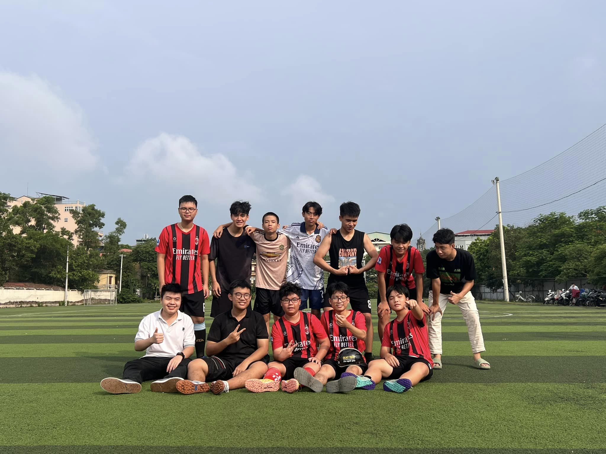
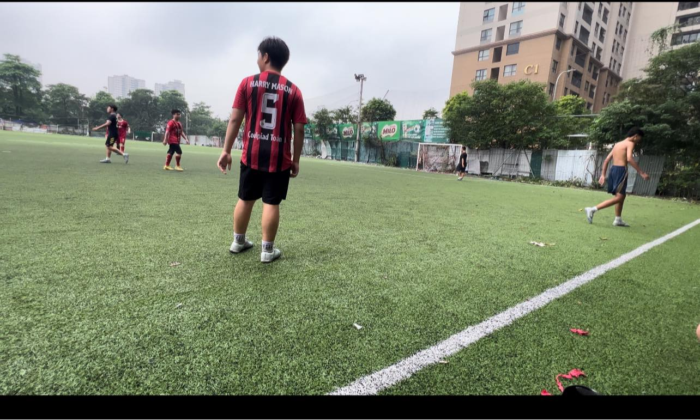

FT: FC Boé 6-3 FC VoDanh
Thành Tài ⚽️🅰️🅰️🅰️
Thái ⚽️⚽️🅰️
Mon ⚽️🅰️
Hải ⚽️
Thạch Đá ⚽️🅰️
_Trong khi FC Boé không có đối , ra sân đá nội bộ với chỉ 9 thành viên nhưng tình cờ lại có duyên gặp FC ??? cũng bị đối bùng kèo, 2 bên đã có trận đấu giao hữu với nhau dưới trời thấm mưa.
_Fc tiếp tục có chuỗi thắng thứ 10 liên tiếp,lần này đã có những thử thách khó hơn khi bên bạn là những người đến từ các nơi .Vượt qua tất cả khi mà bên chúng ta là đã người thể hiện được bản lĩnh hơn và vượt lên chiến thắng với 1 tinh thần đoàn kết
_Với sự xuất hiện của Thạch Đá ở trên hàng công,đội ta đã dẫn trước với một bàn thắng bài bản.Mon đã có 1 ngày thi đấu tuyệt vời và lăn xả
_Hải tiếp tục chứng minh bản thân với 1 bàn thắng được ghi khi được đẩy lên tiền đạo với sự hỗ trợ của Thái,Mason có 1 ngày thi đấu thăng hoa
_Tài Beckenbauer 1 vs 7 cùng với Kiên đã có những tình huống phòng thủ xuất thần.Đặc biệt,đến từ vị trí của Kiên khi có những pha bóng cứu thua không tưởng

FT: FC Boé 8-1 FC Lý 1
Mason ⚽️⚽️⚽️
Trần Tiến⚽️⚽️🅰️
Sơn Hải ⚽️⚽️🅰️
Lỏ ⚽️🅰️🅰️🅰️
_Trận đấu nâng chuỗi bất bại của FC Boé lên con số 9 và đánh dấu sự trở lại của một số thành viên lâu ngày vắng mặt
_Trên chảo lửa Trung Văn, FC Boé đã có màn trình diễn xuất sắc và chiến thắng huỷ diệt với tỉ số 8-1
_Mặc dù 2 bên đều thiếu đi những chủ lực xuất sắc của team mình nhưng 2 bên đã chiến đầu hết mình. Respect!!
_Nhận xét chung: Một số thành viên lâu ngày mới trở lại sân cỏ đã có nhiều cố gắng nhưng cần bình tĩnh hơn, xử lí tình huống đúng đắn hơn